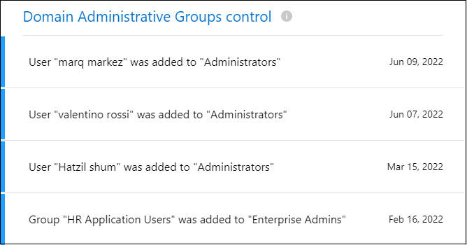

Solicitar cambios en el documento
Solicitar cambios en el documento Editar en GitHub
Editar en GitHub Guía del colaborador
Guía del colaboradorGestión de recomendaciones sobre seguridad cibernética para sus fuentes de datos
Colaboradores
Utilice la consola de protección de ransomware para obtener una descripción general de alto nivel de la resistencia cibernética de todos sus entornos de trabajo de BlueXP (anteriormente Cloud Manager) y otras fuentes de datos. Usted puede profundizar en cada área para encontrar más detalles y posibles soluciones.
En el menú de navegación de la izquierda de BlueXP, seleccione Gobierno > Protección contra ransomware.

Ransomware Protection Score y acciones recomendadas
El panel de puntuación de protección de ransomware ofrece una forma sencilla de ver la resiliencia de sus datos con un ataque de ransomware. Se trata de una agregación de todas las acciones que se recomiendan para mejorar su política de seguridad de datos y su resiliencia cibernética. Este panel funciona junto con el panel acciones recomendadas. Hay dos partes en el panel de puntuación de la protección de Ransomware:
-
La puntuación general de protección de sus datos (protegido del 0 al 100 %).
La puntuación se basa en un cálculo ponderado de todas las recomendaciones posibles.
-
¿Cuántas acciones recomendadas hay disponibles para elevar su protección al 100%, si implementa las recomendaciones.
Los tres tipos de acciones recomendadas se ajustan al "Marco NIST para la seguridad cibernética":
-
Proteger
-
Detectar
-
Recuperación
-

En esta página de ejemplo, hay siete acciones recomendadas para la categoría "proteger". La primera recomendación es relevante para 258 archivos.
Este panel admite entornos de trabajo y orígenes de datos que se han añadido a Cloud Data Sense.
Tenga en cuenta que las recomendaciones son aplicables por origen de datos. Por lo tanto, si la misma recomendación es relevante para 3 fuentes de datos, se contará como 3 recomendaciones.
Haga clic en el  Para expandir cada acción recomendada, como se muestra a continuación.
Para expandir cada acción recomendada, como se muestra a continuación.

Para ver la lista detallada de los datos que se han identificado como que tienen una acción recomendada, haga clic en el botón investigar y se le redirigirá a la página Investigación de detección de datos en la nube con la lista de todos los archivos que cumplen los criterios para la acción recomendada.
A continuación, puede decidir si desea aplicar la acción recomendada en todos esos archivos o sólo en algunos de ellos.
Después de corregir la acción recomendada, la próxima actualización del panel de puntuación de protección contra ransomware (cada 5 minutos) ajustará el número de la puntuación. También puede hacer clic en el botón Re-Scan para actualizar la página ahora.
Lista de acciones recomendadas
Estas son las acciones recomendadas y las soluciones sugeridas que se han realizado un seguimiento actual.
| Acción recomendada | Descripción | Posible solución |
|---|---|---|
Reduzca los permisos para elementos sensibles a X con permisos amplios |
Cloud Data Sense ha encontrado archivos confidenciales con permisos abiertos en sus orígenes de datos. Esto incluye todos los datos confidenciales (datos personales y datos personales confidenciales) que tengan permisos "abiertos a la organización" o "abiertos al público". |
Haga clic en el botón investigar de cada origen de datos y se le redirigirá a la página Investigación de detección de datos, donde podrá ver todos los archivos confidenciales en riesgo y tomar medidas adicionales para reducir ese riesgo. Esto incluye cómo reducir los amplios permisos en esos archivos. |
Mueva X elementos confidenciales de fuentes de datos no protegidas y a ubicaciones seguras |
Cloud Data Sense encontró datos confidenciales en orígenes de datos no protegidos. Estas son ubicaciones donde el software de protección de ransomware no puede proteger los datos. Normalmente, su organización DE TI tiene políticas que restringen los datos confidenciales de determinadas ubicaciones corporativas. Esta acción recomendada le permite identificar los archivos que tienen datos confidenciales y moverlos a un origen de datos más seguro, donde se puede almacenar sensible **. |
Puede utilizar Data Sense para mover rápidamente estos archivos a un origen de datos mejor protegido. Utilizará la capacidad de detección de datos para "Mover archivos de origen a un recurso compartido NFS". |
Patch X abre CVE en fuentes de datos y |
Se han encontrado CVE (vulnerabilidades y exposiciones comunes) sin parches en sus sistemas ONTAP y/o Cloud Volumes ONTAP locales. Estos problemas solo se identifican si el producto Digital Advisor (anteriormente, asesor digital Active IQ) se integra con sus sistemas de almacenamiento. Se trata de vulnerabilidades conocidas en los sistemas de almacenamiento de NetApp que cuentan con correcciones disponibles para resolver CVE. Los NetApp se enumeran en la lista "Página Seguridad del producto". |
Haga clic en el botón Digital Advisor de cada origen de datos y se le redirigirá a la página Security Vulnerabilities del asesor digital. En él podrá ver los detalles de los CVE abiertos y la acción recomendada para resolver cada CVE. Con frecuencia, la solución consiste en actualizar el software ONTAP en el sistema. "Obtenga más información sobre la página vulnerabilidades de seguridad". |
Configure los datos más importantes de su negocio |
No ha definido las políticas de datos críticos de negocio en la página Configuración de datos críticos de negocio. Para usted es importante identificar lo que considera datos críticos para el negocio, de modo que se le presten a su atención posibles problemas de ransomware con estos datos. |
Haga clic en la |
Mapa de la Cyber resilencia
El mapa de la Cyber resilencia es el área principal del panel de control. Le permite ver todos sus entornos de trabajo y fuentes de datos de forma visual y poder ver información relevante sobre la ciberresistencia.
El mapa consta de tres partes:
- Panel izquierdo
-
Muestra una lista de alertas para las que el servicio supervisa todos sus orígenes de datos. También indica el número de cada alerta concreta que está activa en el entorno. Tener un gran número de un tipo de alerta puede ser una buena razón para intentar resolver primero esas alertas.
- Panel central
-
Muestra todos los orígenes de datos, servicios y Active Directory en un formato gráfico. Los entornos saludables tienen un indicador verde y los entornos que tienen alertas tienen un indicador rojo.
- Panel derecho
-
Después de hacer clic en un origen de datos que tiene un indicador rojo, este panel muestra las alertas de ese origen de datos y ofrece recomendaciones para resolver la alerta. Las alertas se ordenan de modo que las alertas más recientes aparezcan primero. Muchas recomendaciones le llevan a otro servicio de BlueXP en el que puede resolver el problema.
Estas son las alertas actualmente rastreadas y las soluciones sugeridas.
| Alerta | Descripción | Reparación |
|---|---|---|
Se han detectado altas tasas de cifrado de datos |
Se ha producido un aumento anormal en el porcentaje de archivos cifrados o archivos dañados en el origen de datos. Esto significa que el porcentaje de archivos cifrados ha aumentado en más del 20% en los últimos 7 días. Por ejemplo, si el 50% de los archivos están cifrados, entonces un día más tarde este número aumenta al 60%, verá esta alerta. |
Haga clic en el enlace para iniciar el "Página de investigación de detección de datos". Allí puede seleccionar los filtros de los Working Environment y Category (cifrados y dañados) específicos para ver la lista de todos los archivos cifrados y dañados. |
Se han encontrado datos confidenciales con amplios permisos |
Los datos confidenciales se encuentran en los archivos y el nivel de permisos de acceso es demasiado alto en un origen de datos. |
Haga clic en el enlace para iniciar el "Página de investigación de detección de datos". Aquí puede seleccionar los filtros para el entorno de trabajo, nivel de sensibilidad (personal sensible) y permisos abiertos para ver la lista de los archivos que tienen este problema. |
Cloud Backup no realiza backups de uno o varios volúmenes |
Algunos volúmenes del entorno de trabajo no se están protegiendo con el "Backup en el cloud". |
Haga clic en el enlace para iniciar Cloud Backup y, a continuación, puede identificar los volúmenes que no se van a realizar backup en el entorno de trabajo y, a continuación, decidir si desea habilitar los backups en esos volúmenes. |
Uno o más repositorios (volúmenes, bloques, etc.) de sus orígenes de datos no están siendo analizados por Data Sense |
Algunos datos de sus orígenes de datos no se analizan con "Cloud Data SENSE" identificar problemas relacionados con el cumplimiento de normativas y la privacidad y buscar oportunidades de optimización. |
Haga clic en el vínculo para iniciar detección de datos y activar el análisis y la asignación de los elementos que no se van a analizar. |
El antivirus ransomware integrado no está activo en todos los volúmenes |
Algunos volúmenes del sistema ONTAP en las instalaciones no tienen el "Función anti-ransomware de NetApp" activado. |
Haga clic en el enlace y se le redirigirá al Refuerce el panel de entorno ONTAP y al entorno de trabajo con la cuestión. Allí usted puede investigar cuál es la mejor manera de solucionar el problema. |
La versión de ONTAP no está actualizada |
La versión del software ONTAP instalada en los clústeres no cumple las recomendaciones de "Guía de fortalecimiento de la seguridad de NetApp para sistemas ONTAP". |
Haga clic en el enlace y se le redirigirá al Refuerce el panel de entorno ONTAP y al entorno de trabajo con la cuestión. Allí usted puede investigar cuál es la mejor manera de solucionar el problema. |
Copias Snapshot no configuradas para todos los volúmenes |
Algunos volúmenes del entorno de trabajo no se están protegiendo mediante la creación de snapshots de volumen. |
Haga clic en el enlace y se le redirigirá al Refuerce el panel de entorno ONTAP y al entorno de trabajo con la cuestión. Allí usted puede investigar cuál es la mejor manera de solucionar el problema. |
La auditoría de las operaciones de archivos no está activada para todas las SVM |
Algunas máquinas virtuales de almacenamiento del entorno de trabajo no tienen habilitada la auditoría del sistema de archivos. Se recomienda para poder realizar un seguimiento de las acciones de los usuarios en los archivos. |
Haga clic en el enlace y se le redirigirá al Refuerce el panel de entorno ONTAP y al entorno de trabajo con la cuestión. Allí puede investigar si necesita habilitar la auditoría de NAS en sus SVM. |
Incidentes de ransomware detectados en sus sistemas
Los incidentes de ransomware detectados en sus sistemas gestionados aparecerán como alertas en el panel Ransomware Incidents. Esto incluye eventos de cifrado, extensiones de archivo sospechosas, actividad de ransomware y actividad maliciosa. El panel mostrará el tipo de incidente y si se han ejecutado acciones automáticas para intentar resolver el problema. Por ejemplo, se podría generar una copia Snapshot de volumen y enviarla al cloud.
La compatibilidad actual es con clústeres de ONTAP en las instalaciones que ejecutan protección de ransomware autónoma (ARP). ARP utiliza el análisis de cargas de trabajo en entornos NAS (NFS y SMB) para detectar de forma proactiva y advertir sobre actividades anormales que pueden indicar un ataque de ransomware. "Más información sobre la protección autónoma de Ransomware de ONTAP".
Haga clic en el  para expandir una incidencia para ver el número de archivos cifrados identificados en el volumen sospechoso, los tipos de extensiones de archivo y la hora en que se produjo el ataque.
para expandir una incidencia para ver el número de archivos cifrados identificados en el volumen sospechoso, los tipos de extensiones de archivo y la hora en que se produjo el ataque.
Puede hacer clic en el botón recuperar si desea intentar recuperarse del ataque de ransomware. De este modo, se une al panel de recuperación de protección de ransomware, en el que puede reemplazar el volumen con una copia Snapshot anterior que no se ha visto afectada por el ransomware. "Consulte cómo utilizar el panel de recuperación".
-
Debe tener un clúster de ONTAP en las instalaciones que ejecute ONTAP 9.11 o superior.
-
Debe tener instalada la licencia Anti_ransomware (ONTAP 9.11.1 +) en al menos un nodo del clúster.
-
Cada volumen que desea proteger debe tener ARP habilitado. "Vea cómo habilitar la protección autónoma de Ransomware".
-
La protección de ransomware autónoma de NetApp (ARP) debe haber estado habilitada durante un período de aprendizaje inicial (también conocido como "ejecución seca") durante 30 días antes de cambiar al "modo activo", de modo que tiene tiempo suficiente para evaluar las características de la carga de trabajo y notificar correctamente los ataques sospechosos de ransomware.
Datos listados por archivos cifrados
El panel Encrypted Files muestra los 4 orígenes de datos principales con el mayor porcentaje de archivos cifrados, a lo largo del tiempo. Normalmente se trata de elementos que han sido protegidos mediante contraseña. Esto se consigue comparando las tasas de cifrado de los últimos 7 días para ver qué orígenes de datos tienen un incremento superior al 20 %. Un aumento de esta cantidad podría significar que el ransomware ya es atacado su sistema.

Haga clic en una línea de uno de los orígenes de datos para ver los resultados filtrados en la página Investigación de detección de datos para que pueda seguir investigando.
Principales repositorios de datos por sensibilidad de datos
El panel Top Data Repository by Sensitivity Level enumera hasta los cuatro principales repositorios de datos (entornos de trabajo y orígenes de datos) que contienen los elementos más sensibles. El gráfico de barras de cada entorno de trabajo se divide en:
-
Datos no confidenciales
-
Datos personales
-
Datos personales confidenciales

Puede pasar el ratón sobre cada sección para ver el número total de elementos de cada categoría.
Haga clic en cada área para ver los resultados filtrados en la página Investigación de detección de datos para que pueda seguir investigando.
Control de grupo administrativo de dominio
El panel Domain Administrative Group control muestra los usuarios más recientes que se han agregado a sus grupos de administradores de dominio para ver si se deben permitir todos los usuarios en esos grupos. Debe tener "Integra un Active Directory global" Cloud Data SENSE permite que este panel esté activo.

Los grupos administrativos predeterminados incluyen “Administradores”, “Administradores de dominio”, “Administradores de empresa”, “Administradores de clave de empresa” y “Administradores de clave”.
Datos listados por tipos de permisos abiertos
El panel Open Permissions muestra el porcentaje de cada tipo de permiso que existe para todos los archivos que se están analizando. El gráfico se proporciona desde Data Sense y muestra los siguientes tipos de permisos:
-
Sin acceso abierto
-
Abierto a la organización
-
Abierto al público
-
Acceso desconocido

Puede pasar el ratón sobre cada sección para ver el porcentaje y el número total de archivos de cada categoría.
Haga clic en cada área para ver los resultados filtrados en la página Investigación de detección de datos para que pueda seguir investigando.
Vulnerabilidades del sistema de almacenamiento
El panel vulnerabilidades del sistema de almacenamiento muestra el número total de vulnerabilidades de alta, media y baja seguridad que la herramienta Asesor digital de Active IQ ha encontrado en cada uno de los clústeres de ONTAP. Se deben prestar servicios de inmediato a las grandes vulnerabilidades para asegurarse de que sus sistemas no estén abiertos a ataques.
-
El conector BlueXP debe estar instalado en sus instalaciones, no debe ponerse en marcha con un proveedor de cloud.
-
Debe tener un clúster de ONTAP en las instalaciones
-
El clúster se configura en Active IQ
-
Debe haber registrado una cuenta de NSS existente en BlueXP para ver los clústeres y ver la interfaz de usuario del asesor digital de Active IQ.
Tenga en cuenta que puede ver el asesor digital de Active IQ directamente seleccionando Sanidad > Consejero digital en el menú BlueXP.

Haga clic en el tipo de vulnerabilidad (Alta, Media, Baja) que desea ver en uno de sus clústeres y se le redirigirá a la página vulnerabilidades de seguridad en el Asesor digital de Active IQ. (Puede encontrar más información sobre esta página en la "Documentación del asesor digital de Active IQ".) Puede ver las vulnerabilidades y, a continuación, seguir la acción recomendada para resolver el problema. A menudo, la resolución consiste en actualizar el software ONTAP con una versión puntual o una versión completa que resuelva la vulnerabilidad.
Estado del endurecimiento de los sistemas ONTAP
El panel reforzar el entorno ONTAP proporciona el estado de determinadas opciones en los sistemas ONTAP que realizan un seguimiento de la seguridad de la implementación según el "Guía de fortalecimiento de la seguridad de NetApp para sistemas ONTAP" y a la "Función ONTAP antiransomware" que detecta y advierte de la actividad anormal de forma proactiva.
Puede revisar las recomendaciones y decidir cómo quiere solucionar los posibles problemas. Puede seguir los pasos para cambiar la configuración de los clústeres, aplazar los cambios otra vez o ignorar la sugerencia.
En este momento, este panel admite ONTAP, Cloud Volumes ONTAP y Amazon FSX en las instalaciones para los sistemas ONTAP de NetApp.

Los ajustes que se están realizando el seguimiento incluyen:
| Objetivo de endurecimiento | Descripción | Reparación |
|---|---|---|
ONTAP contra el ransomware |
El porcentaje de volúmenes que tienen activado el antivirus ransomware integrado. Válido solo para sistemas ONTAP en las instalaciones. Un icono de estado verde indica que > 85 % de los volúmenes están habilitados. El amarillo indica que el 40-85 % está habilitado. El rojo indica que < 40% está activado. |
"Vea cómo habilitar el antivirus en sus volúmenes" Uso de System Manager. |
Auditoría NAS |
El número de equipos virtuales de almacenamiento que tienen habilitada la auditoría del sistema de archivos. Un icono de estado verde indica que > 85 % de las SVM tienen habilitada la auditoría del sistema de archivos NAS. El amarillo indica que el 40-85 % está habilitado. El rojo indica que < 40% está activado. |
"Descubra cómo habilitar la auditoría de NAS en SVM" Con la CLI. |
Versión de ONTAP |
La versión del software ONTAP instalada en los clústeres. Un icono de estado verde indica que la versión es actual. Un icono amarillo indica que el clúster está detrás de 1 o 2 versiones de revisión o 1 versión secundaria para sistemas locales, o detrás de 1 versión principal para Cloud Volumes ONTAP. Un icono rojo indica que el clúster está detrás de las versiones de revisión 3, o de 2 versiones secundarias, o 1 versión principal para sistemas en las instalaciones, o detrás de 2 versiones principales de Cloud Volumes ONTAP. |
"Vea la mejor forma de actualizar los clústeres en las instalaciones" o. "Sus sistemas Cloud Volumes ONTAP". |
Snapshot |
Es la funcionalidad Snapshot activada en los volúmenes de datos y el porcentaje de volúmenes tiene copias Snapshot. Un icono de estado verde indica que > 85% de los volúmenes tienen snapshots habilitadas. El amarillo indica que el 40-85 % está habilitado. El rojo indica que < 40% está activado. |
"Vea cómo se habilitan las snapshots de volúmenes en los clústeres locales", o. "En sus sistemas Cloud Volumes ONTAP", o. "En el FSX para sistemas ONTAP". |
Estado de los permisos de los datos críticos de su negocio
El panel Business Critical data permisanalysis muestra el estado de los permisos de los datos que son críticos para su negocio. De esta forma, podrá evaluar rápidamente qué nivel de protección están protegiendo los datos esenciales de su empresa.
Este panel muestra datos basados en las políticas seleccionadas en la página Configuración de datos críticos de negocio. Muestra los datos de las dos políticas empresariales críticas que tienen el máximo número de archivos. Haga clic en el enlace para ver o definir políticas adicionales. "Más información sobre la configuración y selección de políticas de datos empresariales críticos".
El gráfico muestra el análisis de permisos de todos los datos que cumplen los criterios de sus políticas. Enumera el número de elementos que son:
-
Abrir a permisos públicos: Los elementos que Data Sense considera abiertos a public
-
Abrir a permisos de organización: Los elementos que Data Sense considera abiertos a la organización
-
No hay permisos abiertos: Los elementos que Data Sense considera que no hay permisos abiertos
-
Permisos desconocidos: Los elementos que Data Sense considera permisos desconocidos
Coloque el cursor sobre cada barra de los gráficos para ver el número de resultados de cada categoría. Haga clic en una barra y se mostrará la página Investigación de detección de datos para que pueda investigar más a fondo qué elementos tienen permisos abiertos y si debe realizar algún ajuste a los permisos de archivo.
Realice backups de los datos empresariales más importantes
El panel Backup Status muestra cómo se protegen las diferentes categorías de datos mediante Cloud Backup. Esto identifica la información exhaustiva de la que se realiza un backup de sus categorías más importantes en caso de que sea necesario recuperar debido a un ataque de ransomware. Estos datos son una representación visual del número de elementos de una categoría específica de un entorno de trabajo de los que se realiza una copia de seguridad.
En este panel solo aparecerán los entornos de trabajo ONTAP en las instalaciones y Cloud Volumes ONTAP de los que ya se está haciendo backup con Cloud Backup y analizados con Cloud Data Sense.

Inicialmente, este panel muestra datos basados en las categorías predeterminadas que hemos seleccionado. Pero puede seleccionar las categorías de datos que desea realizar el seguimiento; por ejemplo, archivos de códigos, contratos, etc. Consulte la lista completa de "categorías" Que están disponibles en Cloud Data Sense para sus entornos de trabajo. A continuación, seleccione hasta 4 categorías.
Una vez rellenados los datos, pase el ratón sobre cada cuadrado de los gráficos para ver el número de archivos de los que se realiza una copia de seguridad de todos los archivos de la misma categoría en el entorno de trabajo. Un cuadrado verde significa que se está realizando una copia de seguridad del 85% o más de los archivos. Un cuadrado amarillo significa entre el 40% y el 85% de los archivos se está realizando una copia de seguridad. Y un cuadrado rojo significa que se está realizando una copia de seguridad del 40% o menos de archivos.
Puede hacer clic en el botón Cloud Backup al final de la fila para ir a la interfaz Cloud Backup para activar la copia de seguridad en más volúmenes en cada entorno de trabajo.
Datos de sus volúmenes que se protegen con SnapLock
Puede utilizar la tecnología SnapLock de NetApp en sus volúmenes de ONTAP para conservar archivos en un formato no modificado con fines normativos y de gobernanza. Puede comprometer archivos y copias Snapshot en almacenamiento WORM (escritura única, lectura múltiple) y establecer periodos de retención para estos datos protegidos MEDIANTE WORM. "Obtenga más información acerca de SnapLock".
El panel Critical data imnutability muestra el número de elementos de sus entornos de trabajo que se están protegiendo contra las modificaciones y eliminaciones en almacenamiento WORM mediante la tecnología ONTAP SnapLock. Esto le permite ver qué parte de sus datos tiene una copia inalterable para que pueda comprender mejor sus planes de backup y recuperación contra ransomware.
-
El conector BlueXP debe estar instalado en sus instalaciones, no debe ponerse en marcha con un proveedor de cloud.
-
Debe tener un clúster de ONTAP en las instalaciones
-
Debe tener una licencia SnapLock instalada en al menos un nodo del clúster

Este panel muestra datos basados en las políticas seleccionadas en la página Configuración de datos críticos de negocio. Haga clic en el enlace para ver o definir políticas adicionales. "Más información sobre la configuración y selección de políticas de datos empresariales críticos".
El panel muestra la siguiente información para los datos que coinciden con las políticas seleccionadas:
-
Número de archivos empresariales importantes en todos sus entornos de trabajo analizados configurados para usar SnapLock.
-
Número de archivos empresariales importantes en todos los entornos de trabajo analizados, excepto aquellos configurados para SnapLock. Tenga en cuenta que algunos de estos archivos se pueden proteger utilizando un mecanismo distinto de SnapLock.
Las políticas de detección de datos que incluyen los siguientes filtros no están disponibles en el menú desplegable para las directivas seleccionadas porque descartan áreas de búsqueda importantes:
-
Nombre del entorno de trabajo
-
Tipo de entorno de trabajo
-
Repositorio de almacenamiento
-
Ruta del archivo
Por lo tanto, cuando cree las políticas para ver los datos críticos de su negocio en el panel Critical data imputability, asegúrese de tener esto en cuenta.